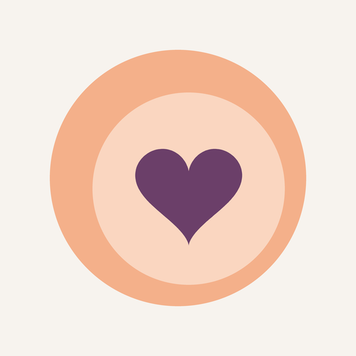

Buikgevoel
Gratis zwangerschapsapp voor jou en je partner
Wat kun je ermee?
Hoe ver je bent, hoe groot je baby nu is en wat er in je lichaam gebeurt.
Controles, echo's en vragen voor je verloskundige, met herinneringen.
Swipe door ruim 5.000 namen en zie welke jullie allebei mooi vinden.
Een checklist van wat je nodig hebt, met ideeën voor handige spullen.
Alleen om bij te houden, naast de algemene richtwaarden. Eetadvies lees je bij het Voedingscentrum.
Bewaar recepten van je favoriete sites en vergelijk wat je boodschappen kosten per supermarkt.
Babylogboek, geboorteaankondiging en een herinneringsboek als pdf.
Deel je week, afspraken en namen met een QR-code, zonder internet.
Nederlands, English, Türkçe, العربية, Polski en Українська.
Privacy
- Geen account en geen eigen server: alles blijft op je telefoon.
- Geen advertenties of tracking.
- Bij de babyuitzet en handige spullen staan advertentielinks naar bol.com. Koop je via zo'n link iets, dan krijgt de maker een kleine vergoeding. Er gaan geen gegevens over jou mee.
Belangrijk
Buikgevoel geeft algemene informatie en helpt je dingen bij te houden. De app is geen medisch hulpmiddel en vervangt geen advies van je verloskundige, huisarts, gynaecoloog of diëtist. Twijfel je of maak je je zorgen? Bel je verloskundige. Bij spoed: 112.
Contact
Vragen, fouten of ideeën: buikgevoelapp@gmail.com